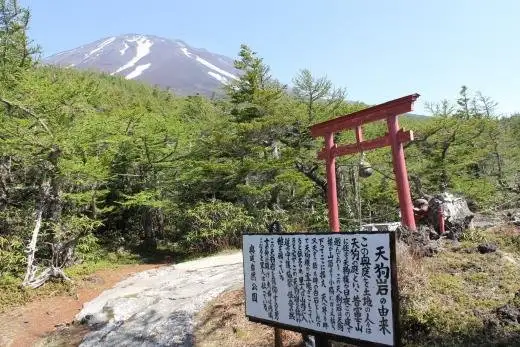
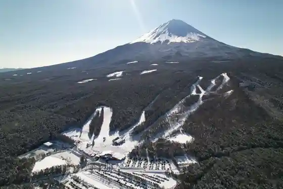
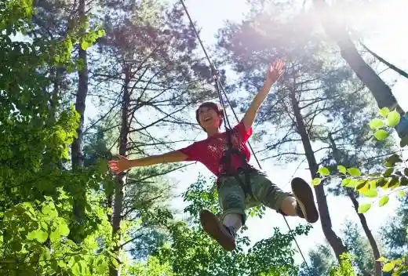
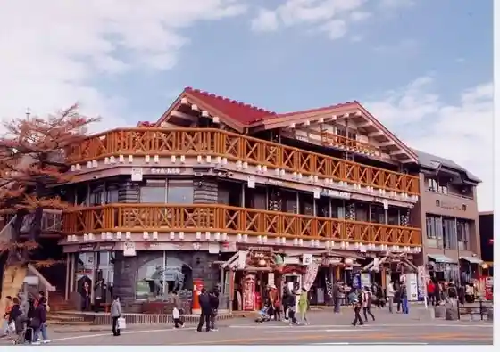
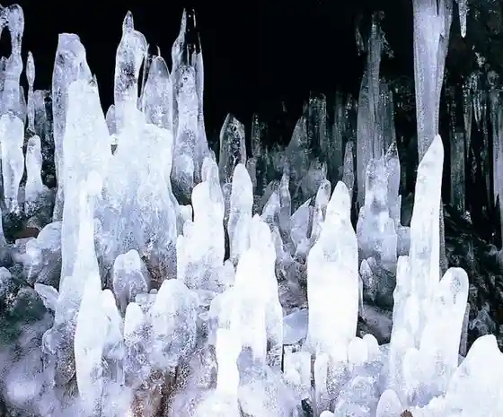

Japan / Yamanashi / Narusawa
Narusawa, Yamanashi
Narusawa · Yamanashi
Narusawa
Highlighted on the Yamanashi map.

Sights
Okuniwa O Niwa Onchu Michi (Okuniwa Oniwa Ochudo)
Narusawa, Yamanashi · 0555-72-5244 · Official / source link
Fujiten Su no Resort (Fujitensu no Rizoto)
Narusawa, Yamanashi · 0555-85-2000 · Official / source link

Foresutoadobencha Fuji (Foresutoadobenchafuji)
Narusawa, Yamanashi · 090-3345-0970 · Official / source link

Fujisan Gogome Gogo Sono Resutohausu (Fujisan Gogomegogogoenresutohausu)
Narusawa, Yamanashi · 0555-72-2121 · Official / source link

Narusawa Hyoketsu (Narusawahyoketsu)
Narusawa, Yamanashi · 0555-85-3089 · Official / source link

Autumn Leaves Dai
Narusawa, Yamanashi · 0555-85-2252 · Official / source link